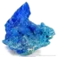
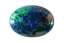
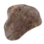
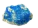
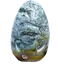

Symbol Grimoire
Blue

Chalcanthite
Eilat Stone
Hilulite
Kinoite
Ocean Blue JasperOceaniteBlue, the color of the ocean, of sleep, and of twilight. Ruled by the element of Water and the planet Libra, these are receptive stones and promote peace. Holding a blue stone, or gazing at it by a soft light calms the emotions. If you have difficulty sleeping, try wearing blue stones to bed. This is also excellent for halting nightmares.
Blue stones are worn or used to promote healing, in general, and specifically to reduce fevers, remove ulcers and their causes, and for eliminating inflammations. They are sometimes held to reduce or remove pain from the body.
If you feel in need of a purification, wear blue stones, perhaps while bathing, to purify your inner being as well as your outer flesh. This is often done prior to magickal ritual.
Symbolic Overview
Blue is the color of the Heavens and is related to the fifth chakra. Whereas reds, oranges, and yellows carry a carnival atmosphere, blue is more sober, even somber, despite its many variations. And yet the bluebird is a universal symbol for happiness. The color has even given its name to a rich vein of music. The "blues" actually refers to "blue notes," notes that are pitched down a little for expressive purposes, as in Billie Holiday's heartbreaking rendition of "Strange Fruit."
There is something cool and detached about blue that gives rise to its reputation for spirituality and chastity. Above all, blue is the color of the sky. Like the sky, blue is infinitely spacious. It contains everything, and yet contains nothing. The color is therefore associated with ideas of eternity. When filmmakers and animators want to place a subject against a different background, they film against a blue screen since the color can be made invisible.
In Jewish tradition, the city of Luz, where the Immortals live, is also called The Blue City. Similarly, the mythical sacred mountain of the Hindus, Mount Meru, is constructed entirely of sapphire on its southern face, and it is this that is said to tinge the skies with blue. There is even a particular shade of blue meant to represent the aristocratic "blue blood," called Royal Blue.
The Coolest Color
Blue is the coolest color and has a calming effect. It is associated with truth, sincerity, loyalty, justice, and intelligence. Traditionally, Mary, the mother of Jesus, wore a blue cloak to symbolize her love, loyalty, and devotion. In medieval times, artists considered red to be the color of God, blue the color of the Son of God (and consequently of Mary as well), and green for the Holy Spirit. Today, businesspeople frequently wear blue as it denotes confidence and stability.
Religious Art
Blue symbolizes heaven, truth, fidelity, and everlasting life.
Jesus and Mary: Jesus and the Virgin Mary usually wear a red tunic and a blue mantle. This signifies love (red) and truth (blue).
St. John the Evangelist: St. John the Evangelist wears a blue tunic with a red mantle. Over time, artists gradually changed the color of his tunic to green.
Etymology and Expressions
The word blue is derived from both the French bleu and the German blau.
Blue has some strange connotations. A "blue story" is one that's licentious. "Bluebeard" is a synonym for a murderous husband. Blue has also been associated with melancholy ("feeling blue" and "blue Monday"), and this might be where blues music received its name. "Blue-collar" workers are laborers, but "bluestockings" are intellectuals. We sometimes experience good luck "out of the blue." Someone who is loyal or faithful is termed "true-blue."
Wedding Tradition
It would be hard to find a bride who didn't walk down the aisle without "something old, something new, something borrowed, and something blue." The old item should have caused luck to someone in the past, the new object brings hope to the bride, the borrowed object carries the lender's blessing and good luck, and the blue object banishes all evil spirits from the wedding day and the entire marriage.
Wisdom and Protection
Philosophers in ancient Rome wore blue in their robes to indicate spirituality and wisdom. Druid bards also wore blue to symbolize harmony and truth. Blue still denotes philosophy in the American university system today.
Wearing blue traditionally protected people from witches, as it was believed that blue was the color of heaven, and witches didn't like it. It also protected the person from the effect of the evil eye.
Blue for Luck
Another traditional belief about blue relates it to luck. Children have a rhyme that goes:
Touch blue
And your wish
Will come true.
The Order of the Garter, which is the highest form of knighthood in Great Britain, was established after King Edward III stooped to pick up a blue garter that had been dropped by one of the ladies at court.
Blue Blood and Other Facts
The term "blue blood" is given to people of high birth and originally comes from Spain. The aristocrats with no Moorish ancestors possessed veins that looked bluer than those who had a mixed ancestry.
Mosquitoes are attracted to blue more than any other color.
Color Healing Properties
Blue has a cooling effect that helps inflamed organs return to balance. It soothes emotional problems and relaxes the mind.
Apoplexy, biliousness, bowel problems, burns, cataracts, chicken pox, colic, duodenal ulcers, dysentery, epilepsy, fevers, gastro-intestinal problems, goiters, headaches, insomnia, jaundice, laryngitis, measles, polio, rashes, renal problems, rheumatism, sore throats
Blue promotes communication and knowledge. It eliminates toxins and is used to treat liver disorders and jaundice.
Norse Runic Symbolism
In the Norse runic tradition, blue represents the all-encompassing, all-penetrating, and omnipresent mystical force of the numen. It is a sign of restless motion and the color of Ódhinn's cloak. In its darkest hues, blue becomes one with black.
Personality of Blue
Blue appeals most strongly to introverts, though some extroverts choose it for the peace and tranquility it provides. People drawn to blue possess creative minds and vivid imaginations. They are shrewd and perceptive, naturally skilled at developing profitable ideas. A deep, contemplative side requires regular time for introspection. They resist constraint and restriction, feeling happiest when anticipating exciting future possibilities. Their adventurous nature sometimes leads to trouble, yet fortune consistently favors them.
Aversion to Blue
Disliking blue suggests constant stress and tension. Your body may manifest this stress through psychosomatic illness. Learning stress management techniques and finding healthy outlets for anxiety becomes vital for wellbeing.
Missing Blue
An absence of blue suggests you feel unsupported or let down by someone close to you. Breathe in blue energy and walk anywhere near water. Sitting beside a fountain proves just as beneficial as walking along a beach.
Supportive Uses of Blue
Blue embodies integrity and calmness. It eliminates fears, anxiety, and nervousness while creating confidence, leadership abilities, and the capacity for calm, dispassionate foresight. Wear blue when stressed or at risk of overreacting to situations. Blue also protects against energy-draining people.
Candle Magick Applications
Use blue when your goal involves loyalty, trust, and honesty in relationships or situations. Blue encourages clear thinking and dissipates anger and other negative emotions. It creates mental clarity and emotional balance, making it ideal for conflict resolution and maintaining calm under pressure.
Dark Magick Applications
In baneful workings, blue candles serve to bring about depression, hopelessness, and emotional coldness. They can drain sympathy from a target, leaving them isolated in sadness and gloom. Blue also establishes a chill, unfeeling atmosphere that undermines warmth and connection. Jupiter rules royal blue, and workings that weaponize blue energy are best performed on a Monday or Thursday.
Lunar Magick
Blue aligns with the moon's psychic and emotional currents, supporting intuitive development and prophetic dreaming. It promotes peaceful communication and inner harmony. Work with blue during full moons or water-ruled lunar phases to deepen spiritual perception.
Color in Your Home
Blue is cool, calm, fresh, soothing, relaxing, tranquil, reflective, and refreshing. It creates a sense of well-being and works well in warm, sunny rooms. Because blue makes people feel relaxed, it is a good choice for bedrooms, kitchens, and bathrooms. It also works well in small rooms, as it makes them seem larger. It should not be used in dining rooms, hallways, or cold rooms.